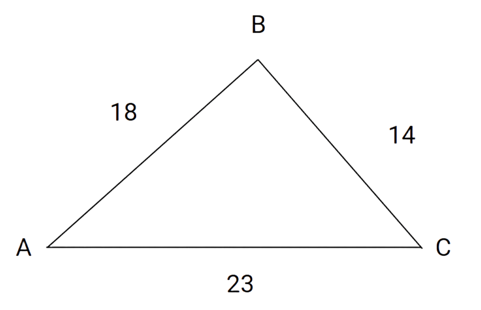
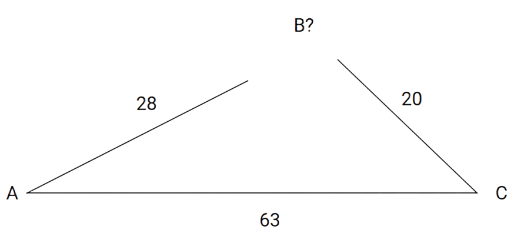
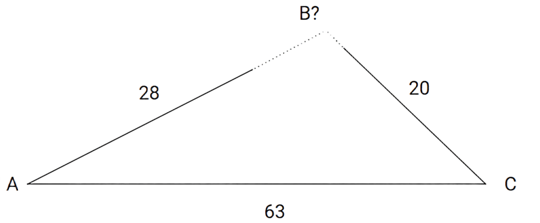
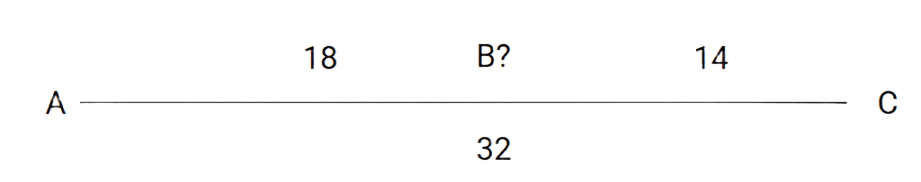

Triangle Inequality Theorem
Introduction
The Triangle Inequality Theorem is a set of formulas used to see if a triangle can be drawn by the length of its sides.
Formula(s)
The formula for the triangle inequality theorem is…
AB < BC + CA
BC < AB + CA
CA < AB + BC
The theorem states that every side of a triangle must be smaller than the sum of the other two sides. Take a triangle as an example…

The triangle has three known sides. This triangle satisfies the triangle inequality theorem as each side is smaller than the sum of the others…
18 < 14 + 23
23 < 18 + 14
14 < 18 + 23
All the sums are bigger than their respective sides.
Now for a triangle that doesn’t satisfy the triangle inequality theorem…

As you can see, there is a gap between AB and BC…

This is because AC is longer than both AB and BC combined…
63 > 28 + 20
This does not satisfy the triangle inequality theorem so a triangle with these sides cannot exist.
Now a situation where the sum of two sides is equal to one side…

If two sides are equal to one side, that means that the triangle is just a straight line instead of a triangle. This is because both AB and BC cover the same distance together as AC.
Conclusion
The triangle inequality theorem is used to find out if a triangle with three known sides can geometrically exist. If one side is longer than the sum of the two others, the triangle cannot geometrically exist.